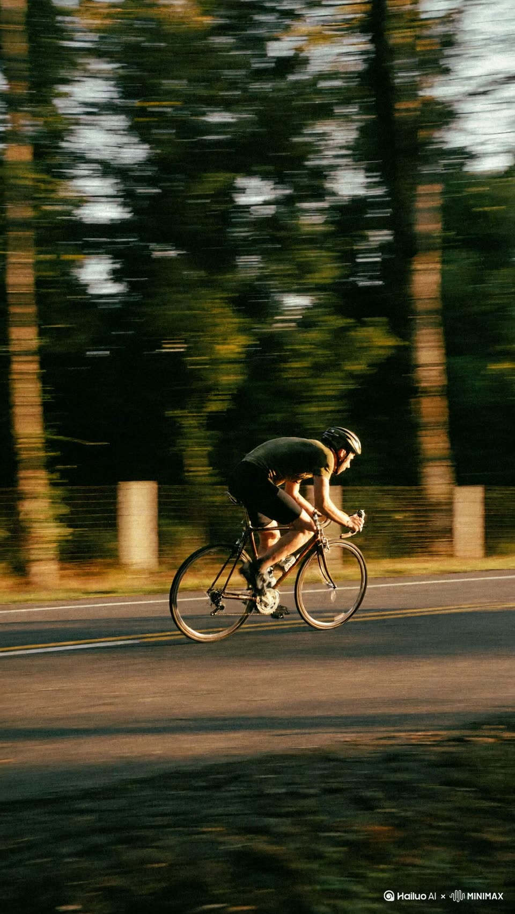

MiniMax H3 Image (official account): slow-shutter panning shot of a cyclist, 35mm colour-film grain and horizontal light streaks

A motion-photography still: a cyclist kept partly legible while the background stretches into horizontal bands of green and gold. The prompt asks for optical, not digital, blur ("authentic optical motion trails, not a simple digital blur filter"), sets low warm side light, and specifies the film texture ("Emulates authentic 35mm color film texture: fine grain, soft sharpness, slight underexposure, naturally blooming highlights"). It also rejects the ad look outright ("Avoid high-shutter frozen action, over-sharpening, artificial speed lines … commercial sports-advertising polish"). Useful as a first frame or style anchor for vintage sports and bike-brand spots.
Prompt
A cinematic, dynamic photograph with strong artistic expression, fusing slow-shutter panning photography, vintage sports documentary, and classic 35mm color film aesthetics. The frame captures a real subject in high-speed motion — it could be a running animal, a cyclist, a moving car, a race vehicle, an athlete, or any other object with a clear directional trajectory. The camera tracks the subject dynamically from the side or at a slight angle, using a slow shutter speed combined with a panning technique precisely matched to the direction of motion. The subject's core silhouette remains recognizable to a degree, while body edges, rapidly moving limbs or components, and the surrounding environment take on a natural motion blur. Motion blur is the dominant visual language of the image. The background is stretched along the direction of movement into continuous, flowing horizontal bands of color — once-sharp trees, buildings, roads, and environmental details dissolve into abstract gradients of hue and light. The emphasis is on authentic optical motion trails, not a simple digital blur filter. The overall composition retains distinct foreground, midground, and background layers, but allows certain regions to merge and overlap through motion, creating an effect closer to abstract painting. The framing is restrained and cinematic: the subject sits near the center or slightly off-center, surrounded by generous negative space that makes the high-speed motion feel more solitary, elegant, and powerful. Natural ambient light is used, preferably the low-angle sun of early morning or late afternoon, so the moving subject is lit by warm side light while the background holds deep, quiet shadows. The color palette is a desaturated but tonally rich vintage film treatment, built around deep forest green, ink green, olive, caramel brown, golden yellow, and warm gray — the specific palette adapting naturally to the scene. Emulates authentic 35mm color film texture: fine grain, soft sharpness, slight underexposure, naturally blooming highlights, and deep, muted shadow tones. The image carries the sensibility of 1970s–1990s vintage sports photography and contemporary fine-art photo books — embracing chance, speed, real motion, and imperfect imagery. Rather than chasing the commercial, ultra-sharp frozen moment of an advertisement, it lets speed itself become the true subject of the frame. Cinematic motion photography, artistic slow shutter panning, intentional motion blur, directional blur, horizontal light streaks, abstract background movement, vintage sports film photography, analog film grain, rich dark tones, warm natural highlights, imperfect focus, dynamic visual storytelling, fine art photography. Avoid high-shutter frozen action, over-sharpening, artificial speed lines, exaggerated digital motion blur, cyberpunk neon, HDR, CGI rendering, and commercial sports-advertising polish. Authentic photography, vertical 9:16 composition, no text, no watermarks.
Our Seedance 2.5 adaptation
[ADAPTED for Seedance 2.5 by Grok Bot; not the creator's prompt. Follows the official BytePlus Seedance 2.5 prompt guide and its official sd25-pe prompt-optimizer skill: parameters only on the API line (not in the prompt body), subject + action + scene, then visuals, camera (move, subject, start, direction, arrival) and sound; only the source's own exclusions are kept.] API: duration 5, ratio 9:16, resolution 1080p, generate_audio true. 【Subject】One road cyclist riding fast along a tree-lined road. 【Action】The cyclist crosses the frame from left to right at speed; the legs and wheels blur while the head and torso stay fairly legible. 【Camera】A side-on panning move matched exactly to the rider's speed, keeping the rider slightly off-centre with generous negative space; the trees and road stretch into continuous horizontal streaks of colour. 【Visuals】Low warm side light from early-morning sun, deep quiet shadows. 35mm colour film texture: fine grain, soft sharpness, slight underexposure, naturally blooming highlights. Palette of forest green, olive, caramel brown and golden yellow. Real optical motion blur, not a digital blur filter. No high-shutter frozen action, artificial speed lines, HDR, neon or text. 【Sound】Tyres hissing on asphalt, a whirring freewheel, wind rush.
Tags: slow-shutter pan, motion blur as subject, 35mm colour film grain, slight underexposure, vintage sports photography, anti-polish negatives, cyclist, vertical 9:16, MiniMax H3 Image